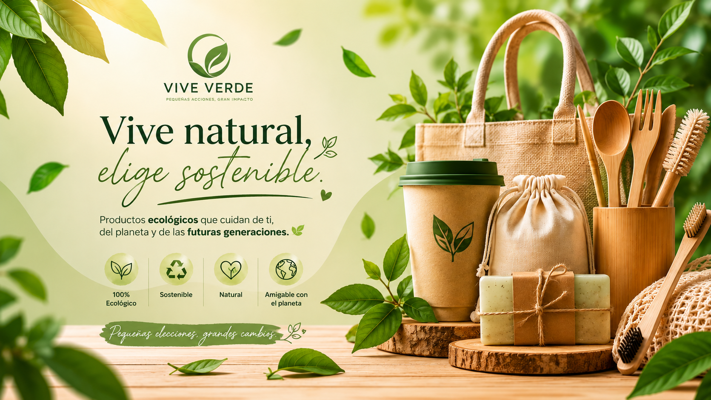
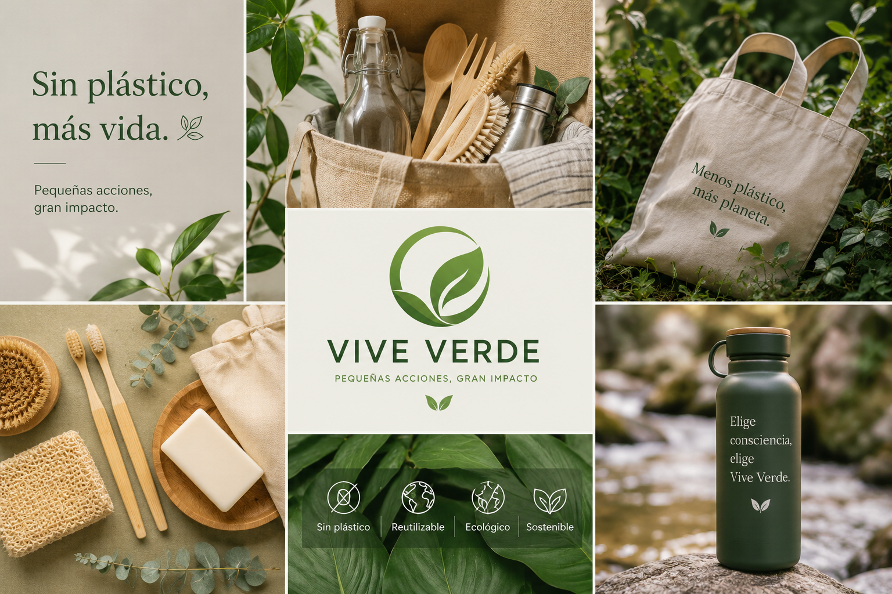

María
“Excelente calidad y productos ecológicos.”
⭐⭐⭐⭐⭐
Todo comenzó con una idea sencilla: demostrar que las pequeñas acciones pueden generar un gran impacto. Los fundadores de Vive Verde crecieron viendo cómo el consumo excesivo y el uso de productos desechables afectaban poco a poco al planeta. Entre bolsas plásticas, empaques innecesarios y hábitos poco sostenibles, nació una pregunta: ¿Y si cuidar el medio ambiente pudiera ser parte de la vida diaria de una forma simple, moderna y accesible? Con esa visión, en 2025 nació Vive Verde, una marca enfocada en productos ecológicos, reutilizables y amigables con el planeta. Más que vender productos, la empresa quería inspirar un estilo de vida consciente, donde cada persona pudiera aportar al cambio desde casa. El logo de la hoja representa crecimiento, renovación y conexión con la naturaleza. Sus tonos verdes transmiten tranquilidad, equilibrio y esperanza por un futuro más sostenible. Desde sus primeros productos reutilizables hasta su tienda online, Vive Verde ha tenido un propósito claro: “Pequeñas acciones, gran impacto.” Cada compra representa una decisión responsable: reducir residuos, apoyar el consumo consciente, y construir un futuro más limpio para las próximas generaciones. Hoy, Vive Verde busca convertirse en una comunidad de personas que creen que vivir de manera sostenible no es una moda, sino una forma de cuidar el mundo que compartimos. 🌎💚

Reducimos residuos contaminantes.
Apoyamos productores sostenibles.
Protegemos el planeta.
“Excelente calidad y productos ecológicos.”
⭐⭐⭐⭐⭐“Muy buena experiencia de compra.”
⭐⭐⭐⭐⭐